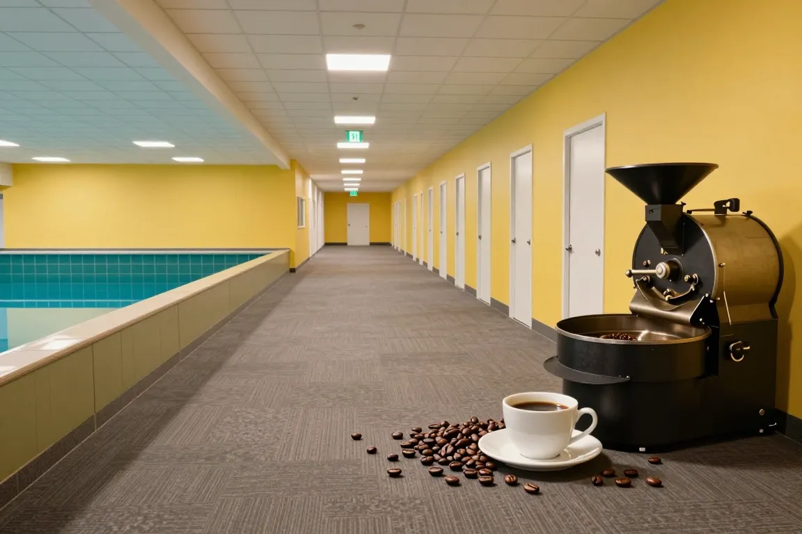

веб · 2019–now · также: Лиминальное пространство, Вид Закулисья, Пустые места
Пустые помещения перехода и рутины: офисные коридоры, бассейны, парковки и торговые центры под плоским светом, без людей. Образ жёлтых комнат 2019 года дал начало виду, а Закулисье (Backrooms) его распространило.

Главная идея
Обычное место без людей и цели ощущается странным: зритель встречает тревогу порога.
Принципы дизайна
Задавайте фон сырым жёлтым (#C9B96B) или тусклым зелёным ковра с лёгким серым оттенком.
Снимайте или рендерьте пустые комнаты с высоты глаз 160 см с одной точкой схода в центре.
Светите плоским люминесцентным светом без сильных теней; точка белого на 4000–4500K.
Добавляйте вид низкого качества записи: блоки JPEG, кроп 4:3, размер 480p–720p, отметку времени моно 14px.
Повторяйте структуру: потолок из плиток 60 см, двери и коридоры рядами из 6 и больше.
Держите текст редким и простым: код комнаты, дата или вывеска стандартным гротеском 14–18px.
Оставляйте 50% кадра и больше пустым полом и стеной.